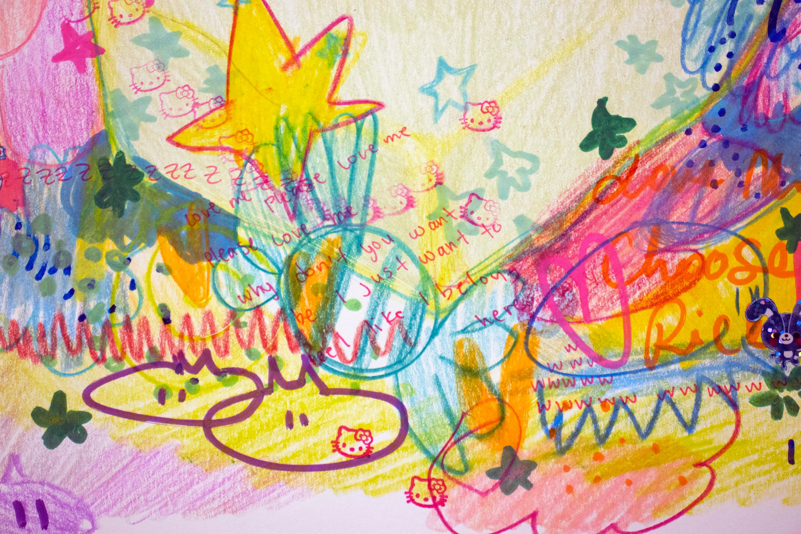
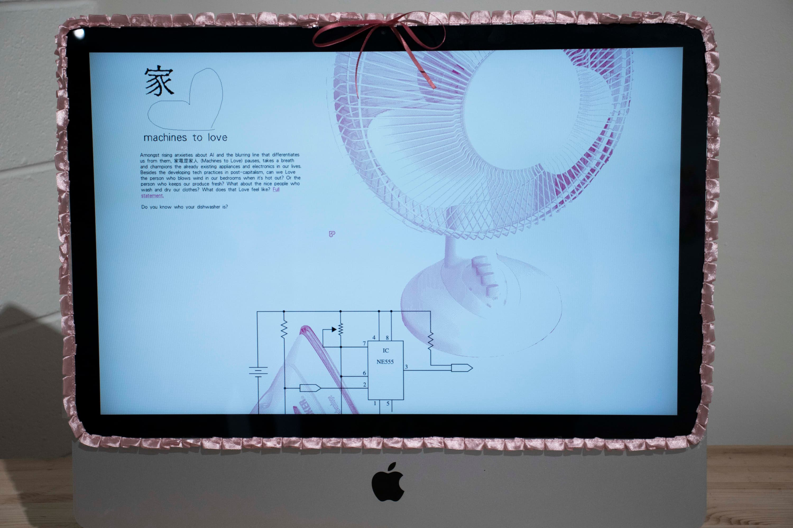

What did you dream about last night?
THE BOWS Gallery- Pop-up exhibition
The BOWS GALLERY is an artist run gallery located on 10th SW. There was no artist statement anywhere, all art was left entirely up to audience interpretation. The show was curated with broad themes of the internet, childhood, and collecting.
Work of Mitchelle Lee
It's a combination of collage and colored pencil art, giving it a bold and somewhat chaotic appearance. On the surface, it has a playful and colorful, almost childlike quality. Amidst this explosion of color, there are hidden writings that weave a mysterious narrative. A girl, teary-eyed and filled with fear, is the central focus. She raises questions in the viewer:
Who is she, and what's causing her sadness?
While it might initially seem like a representation of a childhood nightmare, the words "love me, please love me" suggest deeper emotions in Mitchelle Lee's work. The lack of defined narrative encourages viewers to explore the connection between the whimsical exterior and a complex, emotional story.
Dr.Meow Meow, Machines to Love
Brilliantly simple, just an IKEA desk and an Apple computer as the setup. The story unfolds on a single, endlessly scrolling web page that takes you through a range of activities, each one celebrating our affection for the machines that surround us, from your bedside lamp to your trusty refrigerator.
Visually, this work is a nostalgic 90's trip. The pixelated, images of these machines are brought to life in vibrant hot pink against a clean white background. The piece is peppered with little handwritten inscriptions that reference an innocent, almost teenage love. It's a voyeuristic look into the relationship between humans and machines, all portrayed in an irresistibly cute and kitsch way.
Things I Really Liked
- Interesting Themes of internet and childhood.
- Cool space; cozy and engaged with the art.
- No Artist Statement - less reading more looking.